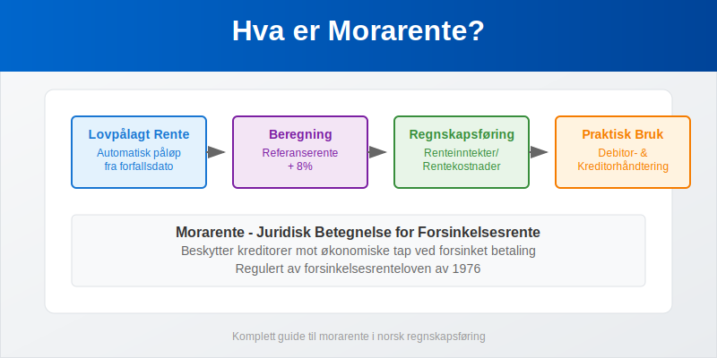
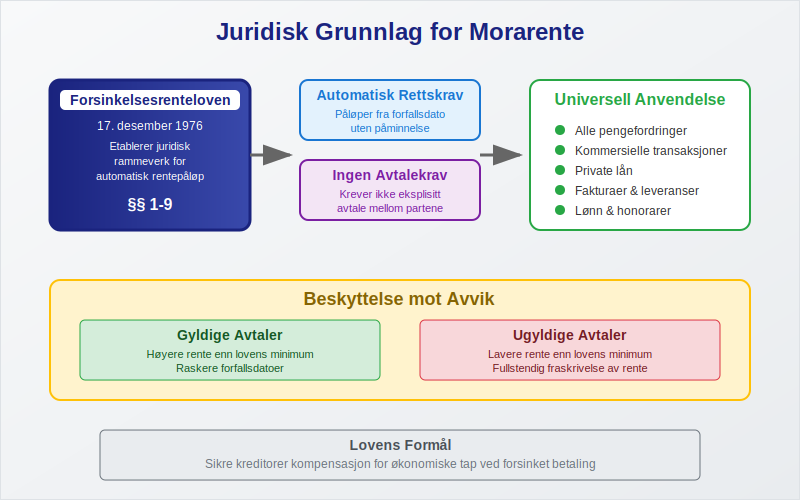
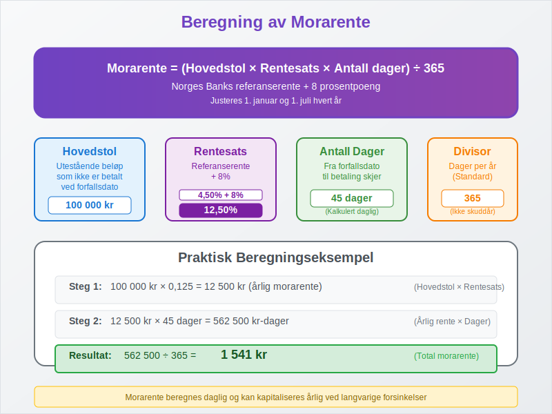
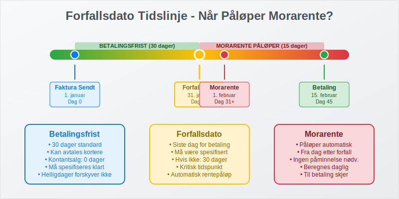
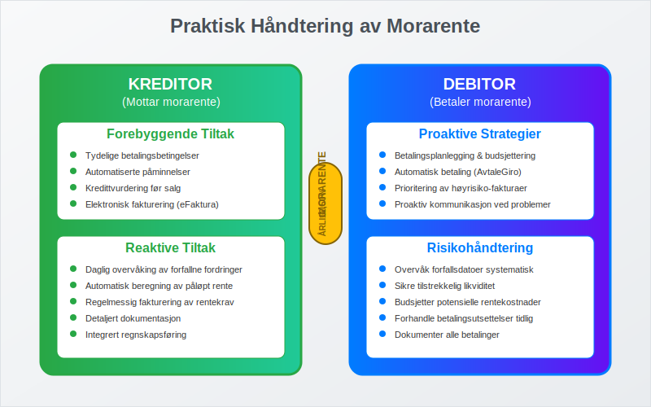
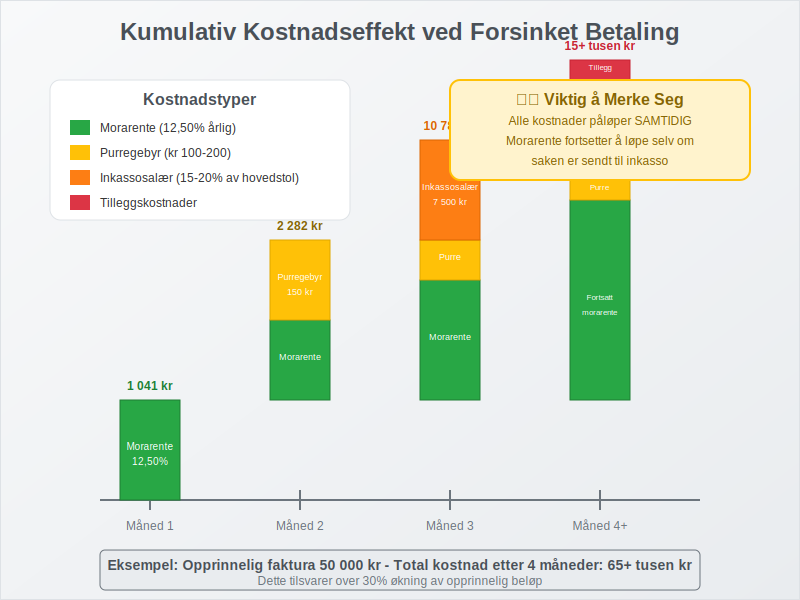
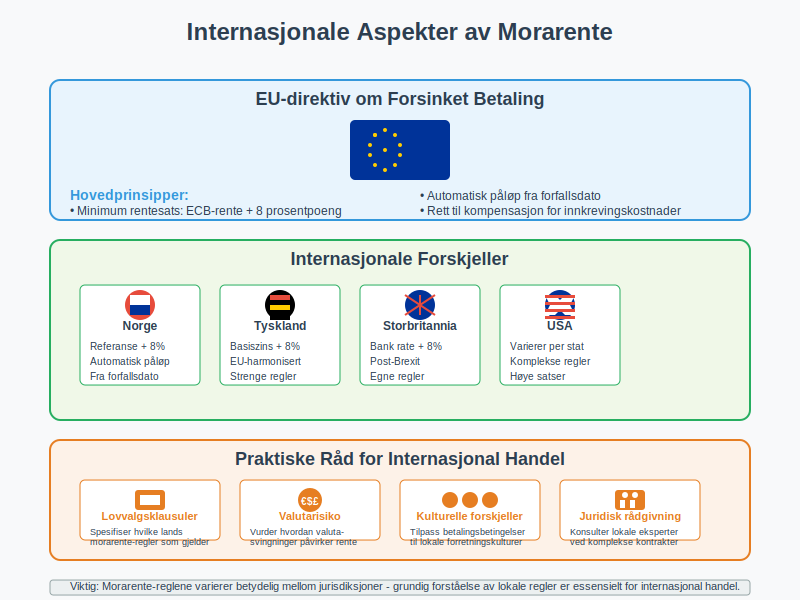
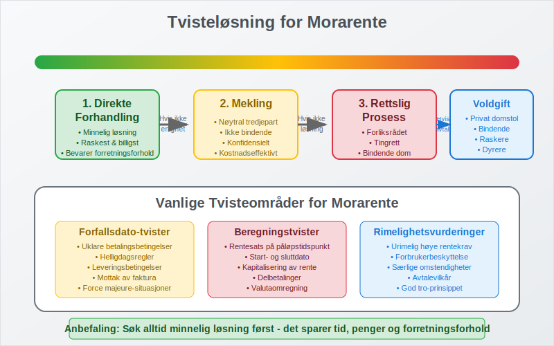

Morarente er en type rente og den juridiske betegnelsen for lovpålagt rente som automatisk påløper når en betaling ikke skjer innen avtalt forfallsdato. Begrepet stammer fra det latinske “mora” som betyr forsinkelse, og representerer en fundamental rettssikkerhet i norsk kontraktsrett. Morarente sikrer at kreditorer kompenseres for økonomiske tap ved forsinket betaling, og gjelder for alle typer pengefordringer inkludert fakturaer, lån og andre betalingsforpliktelser.

Seksjon 1: Juridisk Grunnlag og Definisjon
Morarente er forankret i forsinkelsesrenteloven av 17. desember 1976, som etablerer det juridiske rammeverket for automatisk rentepåløp ved forsinket betaling. Loven sikrer at rente påløper uten krav om særskilt avtale eller påminnelse fra kreditor.
Grunnleggende Prinsipper for Morarente
- Automatisk rettskrav: Morarente påløper automatisk fra forfallsdato
- Ingen avtalekrav: Krever ikke eksplisitt avtale mellom partene
- Universell anvendelse: Gjelder alle pengefordringer i norsk rett
- Beskyttelse mot avvik: Avtaler som reduserer morarente under lovens minimum er ugyldige

Historisk Utvikling
Morarente-konseptet har dype røtter i norsk rett:
| Periode | Regulering | Hovedendringer |
|---|---|---|
| Før 1976 | Alminnelig kontraktsrett | Krevde særskilt avtale |
| 1976-1999 | Forsinkelsesrenteloven | Automatisk påløp etablert |
| 2000-2024 | Moderniserte regler | Tilpasset moderne forretningspraksis |
Seksjon 2: Beregning og Satser for Morarente
Morarente beregnes basert på Norges Banks referanserente pluss et lovfastsatt tillegg på 8 prosentpoeng for kommersielle transaksjoner. Satsen justeres halvårlig for å reflektere endringer i det generelle rentenivået.

Gjeldende Morarente-satser (2024)
| Periode | Referanserente | Lovpålagt Tillegg | Total Morarente |
|---|---|---|---|
| Januar-Juni 2024 | 4,50% | 8,00% | 12,50% |
| Juli-Desember 2024 | 4,50% | 8,00% | 12,50% |
Detaljert Beregningsmetode
Formel for morarente:
Morarente = (Hovedstol × Årlig rentesats × Antall forsinkelsesdager) ÷ 365
Praktisk eksempel:
- Utestående beløp: 100 000 kr
- Forsinkelse: 45 dager
- Morarente-sats: 12,50%
- Beregnet morarente: (100 000 × 0,125 × 45) ÷ 365 = 1 541 kr
Sammensatt Rente og Kapitalisering
I enkelte tilfeller kan morarente kapitaliseres (legges til hovedstolen):
- Årlig kapitalisering: Standard praksis for langvarige forsinkelser
- Sammensatt effekt: Morarente beregnes på både opprinnelig gjeld og påløpt rente
- Juridiske begrensninger: Domstolene kan begrense urimelig kapitalisering
Seksjon 3: Når Påløper Morarente?
Morarente påløper fra det øyeblikk forfallsdato passerer, uavhengig av om debitor er klar over forsinkelsen. Dette skiller morarente fra andre former for forsinkelseskostnader.
Forfallsdato i Ulike Kontekster
For kommersielle fakturaer:
- Avtalt betalingsfrist: Som spesifisert på fakturaen
- Standard 30-dagers regel: Når ingen frist er avtalt
- Kontantsalg: Umiddelbar forfallsdato

For andre forpliktelser:
- Lønn: Siste arbeidsdag i måneden
- Husleie: Vanligvis 1. i måneden (forskuddsbetaling)
- Leverandørfakturaer: I henhold til betalingsbetingelser
Spesielle Forfallsregler
| Situasjon | Forfallsdato | Morarente fra |
|---|---|---|
| Manglende forfallsdato | 30 dager etter mottak | Dag 31 |
| Helligdager | Neste virkedag | Opprinnelig dato |
| Kontantkjøp | Ved levering | Umiddelbart |
Seksjon 4: Regnskapsføring av Morarente
Korrekt regnskapsføring av morarente er avgjørende for både driftsinntekter og driftskostnader. Behandlingen følger etablerte regnskapsprinsipper for periodisering og inntektsføring.
Regnskapsføring for Kreditor
Kontering av morarente som inntekt:
| Konto | Kontobeskrivelse | Debet | Kredit |
|---|---|---|---|
| 1500 | Kundefordringer | X | |
| 8050 | Renteinntekter | X |
Periodisering av påløpt morarente:
| Konto | Kontobeskrivelse | Debet | Kredit |
|---|---|---|---|
| 1590 | Påløpte inntekter | X | |
| 8050 | Renteinntekter | X |
Regnskapsføring for Debitor
Kontering av morarente som kostnad:
| Konto | Kontobeskrivelse | Debet | Kredit |
|---|---|---|---|
| 8150 | Rentekostnader | X | |
| 2400 | Leverandørgjeld | X |
MVA-behandling av Morarente
Viktig: Morarente er fritatt for merverdiavgift:
- For kreditor: Ingen utgående MVA på morarente-inntekter
- For debitor: Ingen inngående MVA-fradrag på morarente-kostnader
- Dokumentasjon: Morarente må faktureres separat fra MVA-pliktige tjenester
Seksjon 5: Praktisk Håndtering av Morarente
Effektiv håndtering av morarente krever systematiske rutiner og proaktiv debitoroppfølging. Dette inkluderer både forebyggende tiltak og reaktive strategier.
Rutiner for Kreditorer
Forebyggende tiltak:
- Tydelige betalingsbetingelser: Spesifiser forfallsdato klart på alle fakturaer
- Automatiserte påminnelser: Implementer systembaserte betalingspåminnelser
- Kredittvurdering: Vurder kunders betalingsevne før salg
- Elektronisk fakturering: Bruk eFaktura for raskere levering
Reaktive tiltak:
- Daglig overvåking: Følg opp forfallne fordringer systematisk
- Automatisk beregning: Implementer systemer som beregner påløpt morarente
- Regelmessig fakturering: Send morarente-krav månedlig eller kvartalsvis
- Dokumentasjon: Oppretthold detaljert dokumentasjon for alle rentekrav

Rutiner for Debitorer
Proaktive strategier:
- Betalingsplanlegging: Bruk budsjettering for å sikre tilstrekkelig likviditet
- Automatisk betaling: Implementer AvtaleGiro for kritiske betalinger
- Prioritering: Betal fakturaer med høyest morarente-risiko først
- Kommunikasjon: Kontakt kreditorer proaktivt ved betalingsproblemer
Seksjon 6: Morarente vs. Andre Forsinkelseskostnader
Det er viktig å forstå forskjellen mellom morarente og andre kostnader som kan påløpe ved forsinket betaling, da disse kan akkumuleres samtidig.
Sammenligning av Forsinkelseskostnader
| Type Kostnad | Juridisk Grunnlag | Beregningsgrunnlag | Maksimum |
|---|---|---|---|
| Morarente | Forsinkelsesrenteloven | Referanserente + 8% | Ingen |
| Fakturagebyr | Avtalefrihet | Faktiske kostnader | Rimelighetsvurdering |
| Purregebyr | Inkassoloven | Fastsatte satser | Kr 100-200 |
| Inkassosalær | Inkassoloven | Prosent av hovedstol | 15-20% |
Kumulativ Kostnadseffekt
Alle forsinkelseskostnader kan påløpe samtidig, noe som gjør forsinket betaling ekstremt kostbart:
Måned 1: Morarente påløper automatisk Måned 2: Purregebyr + fortsatt morarente Måned 3: Inkassosalær + fortsatt morarente Måned 4+: Alle kostnader fortsetter å akkumuleres

Seksjon 7: Særregler for Forbrukerkjøp
For forbrukerkjøp (B2C-transaksjoner) gjelder spesielle beskyttelsesregler som reduserer morarente-byrden for private forbrukere.
Forbrukerkjøpsloven og Morarente
Redusert rentesats:
- Kommersielle transaksjoner (B2B): Referanserente + 8%
- Forbrukerkjøp (B2C): Referanserente + 5%
Krav om påminnelse:
- B2B: Morarente påløper automatisk fra forfallsdato
- B2C: Morarente påløper først etter skriftlig påminnelse
Sammenligning B2B vs. B2C Morarente
| Aspekt | B2B (Næringsdrivende) | B2C (Forbruker) |
|---|---|---|
| Rentesats | Referanse + 8% | Referanse + 5% |
| Påløpstidspunkt | Fra forfallsdato | Etter påminnelse |
| Beskyttelsesnivå | Begrenset | Utvidet |
| Rimelighetsvurdering | Sjelden | Hyppigere |
Seksjon 8: Internasjonale Aspekter av Morarente
Ved internasjonal handel må norske bedrifter være oppmerksomme på at morarente-reglene varierer betydelig mellom jurisdiksjoner.
EU-direktiv om Forsinket Betaling
EU har harmonisert reglene for morarente i kommersielle transaksjoner:
Hovedprinsipper:
- Minimum rentesats: ECB-rente + 8 prosentpoeng
- Automatisk påløp: Fra forfallsdato uten påminnelse
- Kompensasjonsrett: Rett til kompensasjon for innkrevingskostnader
Praktiske Råd for Internasjonal Handel
- Lovvalgsklausuler: Spesifiser hvilke lands morarente-regler som gjelder
- Valutarisiko: Vurder hvordan valutasvingninger påvirker morarente
- Kulturelle forskjeller: Tilpass betalingsbetingelser til lokale forretningskulturer
- Juridisk rådgivning: Konsulter lokale eksperter ved komplekse internasjonale kontrakter

Seksjon 9: Digitalisering og Automatisering
Moderne teknologi revolusjonerer håndteringen av morarente gjennom automatisering og sanntidsovervåking.
ERP-systemer og Morarente-håndtering
Moderne ERP-systemer tilbyr omfattende morarente-funksjonalitet:
Automatiserte prosesser:
- Daglig beregning: Automatisk oppdatering av påløpt morarente
- Automatisk fakturering: Systemgenererte morarente-fakturaer
- Integrert regnskapsføring: Automatisk bilagsføring
- Rapportering: Detaljerte analyser av morarente-inntekter og -kostnader
Kunstig Intelligens og Prediktiv Analyse
AI-drevne løsninger:
- Betalingsprediksjon: Forutsi hvilke kunder som sannsynligvis vil betale for sent
- Optimalisert oppfølging: Automatisk prioritering av inkassoaktiviteter
- Risikosegmentering: Kategoriser kunder basert på betalingshistorikk
Seksjon 10: Skattemessige Konsekvenser
Morarente har betydelige skattemessige implikasjoner som må håndteres korrekt for å unngå problemer med skattemyndighetene.
For Kreditor (Mottaker av Morarente)
Skattepliktig inntekt:
- Full skatteplikt: Morarente er ordinær skattepliktig inntekt
- Periodiseringsprinsippet: Inntektsføres når den påløper, ikke når den mottas
- Dokumentasjonskrav: Detaljert dokumentasjon kreves for skattemyndighetene
Regnskapsføring og skatt:
- Samsvar: Regnskapsføring må samsvare med skattemessig behandling
- Periodisering: Påløpt morarente må periodiseres korrekt
- Revisjonsrisiko: Høy risiko for kontroll ved skatterevisjoner
For Debitor (Betaler av Morarente)
Fradragsberettigelse:
- Ordinært fradrag: Morarente er normalt fullt fradragsberettiget
- Periodisering: Kostnadsføres når den påløper
- Begrensninger: Enkelte begrensninger for private gjeldsforhold
Skatteplanlegging og Morarente
| Strategi | Kreditor | Debitor |
|---|---|---|
| Timing | Utsett inntektsføring til neste år | Fremskynde kostnadsføring |
| Dokumentasjon | Detaljert rentekrav-dokumentasjon | Oppbevar alle betalingsbilag |
| Periodisering | Korrekt periodisering av påløpt rente | Periodiser påløpte rentekostnader |
Seksjon 11: Juridiske Aspekter og Tvisteløsning
Morarente kan bli gjenstand for juridiske tvister, særlig når det gjelder beregning, rimelighetsvurderinger og kontraktstolkning.
Vanlige Tvisteområder
Forfallsdato-tvister:
- Uklare betalingsbetingelser: Når forfallsdato ikke er entydig spesifisert
- Helligdagsregler: Uenighet om forfallsdato ved helligdager
- Leveringsbetingelser: Når betaling er knyttet til levering eller godkjenning
Beregningstvister:
- Rentesats: Uenighet om gjeldende rentesats på påløpstidspunktet
- Beregningsperiode: Diskusjon om start- og sluttdato for renteberegning
- Kapitalisering: Uenighet om sammensatt rente og kapitalisering
Tvisteløsningsmekanismer
Utenrettslige løsninger:
- Direkte forhandling: Forsøk på minnelig løsning mellom partene
- Mekling: Bruk av nøytral tredjepart som mekler
- Voldgift: Bindende avgjørelse fra voldgiftsdomstol
Rettslige prosesser:
- Forliksrådet: For mindre krav (under kr 125 000)
- Tingrett: For større kommersielle tvister
- Høyere instanser: Lagmannsrett og Høyesterett ved prinsipielle spørsmål

Seksjon 12: Fremtidige Utviklingstrender
Morarente-området er i kontinuerlig utvikling, påvirket av teknologiske fremskritt, regulatoriske endringer og endrede forretningspraksis.
Teknologiske Innovasjoner
Blockchain og Smart Contracts:
- Automatisk utførelse: Smart contracts som automatisk beregner og overfører morarente
- Transparens: Uforanderlig dokumentasjon av alle transaksjoner
- Reduserte kostnader: Eliminering av manuelle prosesser
Sanntids-betalingssystemer:
- Øyeblikkelig oppgjør: Reduserer risiko for forsinkelser
- Automatisk morarente: Systembasert beregning og påløp
- Integrerte løsninger: Sømløs integrasjon med regnskapssystemer
Regulatoriske Endringer
Forventede utviklinger:
- Digitalisering av lovverket: Tilpasning til digitale betalingsløsninger
- Harmonisering: Økt samsvar med internasjonale standarder
- Forbrukerbeskyttelse: Styrket beskyttelse av private debitorer
Bærekraft og ESG-hensyn
Miljømessige aspekter:
- Papirløse prosesser: Reduksjon av papirbasert dokumentasjon
- Energieffektive systemer: Optimalisering av IT-infrastruktur
- Bærekraftig inkasso: Miljøvennlige inkassoprosesser
Sosiale hensyn:
- Ansvarlig utlån: Vurdering av debitors betalingsevne
- Fleksible betalingsløsninger: Tilpassede løsninger for vanskeligstilte debitorer
- Finansiell inkludering: Sikre tilgang til kreditt for alle samfunnsgrupper
Konklusjon
Morarente representerer en fundamental rettssikkerhet i norsk kontraktsrett som beskytter kreditorer mot økonomiske tap ved forsinket betaling. Som lovpålagt automatisk rente sikrer morarente at betalingsforpliktelser overholdes og bidrar til å opprettholde tilliten i det kommersielle systemet.
Nøkkelpunkter for suksessfull morarente-håndtering:
- Juridisk forståelse: Grundig kunnskap om forsinkelsesrenteloven og dens anvendelse
- Systematisk tilnærming: Implementering av automatiserte systemer for beregning og oppfølging
- Korrekt regnskapsføring: Sikre samsvar mellom regnskapsmessig og skattemessig behandling
- Proaktiv kommunikasjon: Tydelige betalingsbetingelser og tidlig oppfølging av forsinkelser
- Teknologisk utnyttelse: Bruk av moderne ERP-systemer og digitale betalingsløsninger
Ved å følge beste praksis for morarente-håndtering kan norske bedrifter både beskytte sine interesser som kreditorer og minimere kostnader som debitorer, samtidig som de bidrar til et velfungerende og tillitsbasert forretningsklima.
For ytterligere informasjon om relaterte emner, se våre artikler om forsinkelsesrente, inkassosalær og debitorhåndtering.